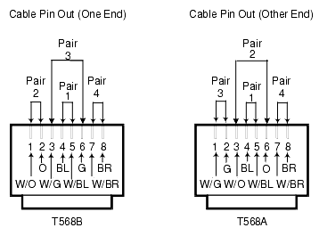

Figure from page 360 (page 360)

Figure from page 367 (page 367)
Source: DeltaV M-series Hardware Installation and Reference Manual, Emerson D800001X312, April 2021 — Appendix G (Control Network Specifications)

The DeltaV Control Network is an Ethernet-based network that connects controllers, workstations, Remote Interface Units, and I/O subsystems. This lesson provides a comprehensive reference of all supported switches, transceivers, and cable specifications.
| Item | Specification |
|---|---|
| Model | Cisco WS-C2940-8TF |
| Type | 8 × 10/100 BASE-T Ethernet + 1 × 100BASE-FX Fiber-Optic + 1 × Gigabit SFP |
| Console | RJ-45 (rear) |
| Item | Specification |
|---|---|
| Model | Cisco WS-C3550-24-FX-SMI |
| Type | 24 × 100Mbit fiber Ethernet (MTRJ) + GBIC module slots |
| Console | RJ-45 (rear) |
| Item | Specification |
|---|---|
| Model | Cisco WS-C2950C-24 |
| Type | 24 × 10/100 BASE-T Ethernet + 2 × 100BASE-FX Fiber-Optic |
| Console | RJ-45 (rear) |
| Item | Specification |
|---|---|
| Model | Cisco WS-C2950-24 |
| Type | 24 × 10/100BASE-T Ethernet |
| Item | Specification |
|---|---|
| Model | Cisco Catalyst 3750G-12S |
| Type | 12-port Small Form-Factor Pluggable (SFP) managed |
| Stacking | STACK 1 / STACK 2 ports (rear) |
| Console | RJ-45 (rear) |
| Item | Specification |
|---|---|
| Model | Cisco Catalyst 3750-24FS |
| Type | 24 × 100BASE-FX fiber-optic + 2 × SFP gigabit slots |
| Stacking | STACK 1 / STACK 2 ports (rear) |
| Item | Specification |
|---|---|
| Model | Cisco Catalyst 3750-24TS |
| Type | 24 × 10/100 twisted pair managed + 2 × SFP gigabit slots |
| Stacking | STACK 1 / STACK 2 ports (rear) |
| Item | Specification |
|---|---|
| Model | Allied Telesyn AT-FS708 |
| Type | 8 × 10/100 twisted pair unmanaged |
| Item | Specification |
|---|---|
| Model | Allied Telesyn AT-FS709FC |
| Type | 8 × 10/100 twisted pair unmanaged + 1 × 100BASE-FX |
| Item | Specification |
|---|---|
| Model | Cisco Catalyst 2960-8TC-L |
| Type | 8 × 10/100Mbit twisted pair + 1 × gigabit multi-function (TP or SFP) |
| Item | Specification |
|---|---|
| Model | Cisco Catalyst 2960-24TT-L |
| Type | 24 × 10/100Mbit twisted pair + 2 × 10/100/1000Mbit RJ45 |
| Item | Specification |
|---|---|
| Model | Cisco Catalyst 2960-24TC-L |
| Type | 24 × 10/100Mbit twisted pair + 2 × gigabit multi-function (TP or SFP each) |
| Item | Specification |
|---|---|
| Model | Cisco Catalyst 2960-48TT-L |
| Type | 48 × 10/100Mbit twisted pair + 2 × RJ45 10/100/1000Mbit |
| Item | Specification |
|---|---|
| Model | Cisco Catalyst 2960-48TC-L |
| Type | 48 × 10/100Mbit twisted pair + 2 × gigabit multi-function (TP or SFP each) |
| Model | Type | Max Distance |
|---|---|---|
| GLC-LH-SM | Single-mode, long-haul | Up to 10 km |
| GLC-SX-MM | Multimode | Up to 550 m |
| Model | Compatible Switch | Type | Max Distance |
|---|---|---|---|
| GLC-FE-100FX | Cisco 2960-8TC-L only | Multimode | Up to 2 km |
| GLC-GE-100FX | Cisco 2960-24TC-L, 2960-48TC-L | Multimode | Up to 2 km |
| Model | Type | Max Distance |
|---|---|---|
| GLC-T | 1 twisted pair port | Up to 100 m |
Appendix G, Pages 341–343
The DeltaV Single Port and Four Port Fiber Switches are DIN-rail mountable Ethernet switches designed for Zone 2 installation. They provide connection to Zone 1 components over certified energy-limited fiber ports.
| Item | Specification |
|---|---|
| Input voltage | 24 VDC ±20% |
| Input current | 0.25 A (Single Port); 0.35 A (Four Port) |
| Link budget (multimode) | 62.5/125 µm: max 11 dB attenuation; 50/125 µm: max 8 dB attenuation |
| Wavelength | 1300 nm |
| Fiber interface | 100BASE-FX with MT-RJ receptacle, full duplex only |
| Nominal fiber distance | 2 km |
| Twisted pair ports | 10/100BASE-T, RJ45 compatible |
| Cable type | Category 5e screened twisted pair (ScTP) |
| Mounting | Vertically on horizontal DIN rail |
Appendix G, Pages 343–348+
DeltaV Smart Switches are plug-and-play switches that require no configuration for basic operation. They are commissioned using:
Commissioning assigns a network address and associates the switch with a control module for hardware alarm interpretation.
| Model | Ports | Gigabit |
|---|---|---|
| MD20-8 / MD20-8-ES | Up to 8 × 10/100Mbit + modules | No |
| MD20-16 / MD20-16-ES | Up to 16 × 10/100Mbit + modules | No |
| MD20-24 / MD20-24-ES | Up to 24 × 10/100Mbit + modules | No |
| MD30-8 / MD30-8-ES | Up to 8 × 10/100Mbit + modules | Yes (2 ports) |
| MD30-16 / MD30-16-ES | Up to 16 × 10/100Mbit + modules | Yes (2 ports) |
| MD30-24 / MD30-24-ES | Up to 24 × 10/100Mbit + modules | Yes (2 ports) |
ES versions have extended temperature range and conformal coating.
| Model | Interface |
|---|---|
| MD4-2TX/SFP (-ES) | 2 × gigabit multimode fiber SFP + 2 × gigabit RJ45 (use one type only) |
| MD2-2FXM2 (-ES) | 2 × 100BASE-FX multimode fiber (SC) |
| MD2-2FXS2 (-ES) | 2 × 100BASE-FX single-mode fiber (SC) |
| MD2-4TX1 (-ES) | 4 × 10BASE-T/100BASE-TX twisted pair (RJ45) |
| MD2-4TX1-POE (-ES) | 4 × 10BASE-T/100BASE-TX twisted pair (RJ45) with PoE |
| MD3-2FXM2/2TX1 (-ES) | 2 × 100BASE-FX multimode (SC) + 2 × twisted pair (RJ45) |
| MD3-2FXS2/2TX1 (-ES) | 2 × 100BASE-FX single-mode (SC) + 2 × twisted pair (RJ45) |
| MD3-4FXM2 (-ES) | 4 × 100BASE-FX multimode fiber (SC) |
| MD3-4FXM4 (-ES) | 4 × 100BASE-FX multimode fiber (ST) |
| MD3-4FXS2 (-ES) | 4 × 100BASE-FX single-mode fiber (SC) |
| MD3-2FXM4/2TX1 (-ES) | 2 × 100BASE-FX multimode (ST) + 2 × twisted pair (RJ45) |
| MD3-1FXS2/3TX1 (-ES) | 1 × 100BASE-FX single-mode (SC) + 3 × twisted pair (RJ45) |
| Fiber Type | Connector | Max Distance |
|---|---|---|
| Multimode | SC or ST | 2 km (100BASE-FX) |
| Single-mode | SC | 2 km (100BASE-FX) |
| Gigabit SFP (multimode) | SFP slot | 550 m |
| Gigabit SFP (single-mode) | SFP slot | 10 km |
| Scenario | Recommended Switch |
|---|---|
| Small network, ≤8 copper ports | Cisco 2940-8TF or Allied Telesyn AT-FS708 |
| Medium network, ≤24 copper + fiber uplinks | Cisco 2950C-24 or Catalyst 2960-24TC-L |
| Large network, 48 copper ports | Cisco Catalyst 2960-48TC-L |
| Fiber backbone / long distance | Cisco 3550-24-FX-SMI or Catalyst 3750-24FS |
| Gigabit SFP flexibility | Cisco Catalyst 3750G-12S or 3750-24TS |
| Zone 2 hazardous area | DeltaV Single Port / Four Port Fiber Switch |
| Modular / expandable | DeltaV MD20 or MD30 Smart Switch + media modules |
| Cable Type | Standard | Max Distance | Use Case |
|---|---|---|---|
| Cat 5e ScTP twisted pair | 10/100BASE-T | 100 m | Copper port connections |
| Multimode fiber (62.5/125 µm) | 100BASE-FX | 2 km | Fiber switch uplinks |
| Multimode fiber (50/125 µm) | 1000BASE-SX | 550 m | Gigabit SFP (GLC-SX-MM) |
| Single-mode fiber | 1000BASE-LX | 10 km | Gigabit SFP (GLC-LH-SM) |
| Multimode fiber | 100BASE-FX Ethernet | 2 km | SFP Ethernet transceivers |
Q1: Why must Cisco switches used with DeltaV be purchased through Emerson channels rather than off-the-shelf?
A1: DeltaV requires a specific version of Cisco switch software and a special configuration. Off-the-shelf switches may have a different software revision and would need to be manually configured to DeltaV specifications. Emerson ships switches with the supported version pre-configured.
Q2: What is the maximum distance for the GLC-LH-SM gigabit transceiver?
A2: Up to 10 km over single-mode fiber.
Q3: In what zones can the DeltaV fiber switches and Smart Switches be installed?
A3: The DeltaV fiber switches can be installed in Zone 2 and connect to Zone 1 components over energy-limited fiber. The MD Smart Switches (ES versions) can also be deployed in hazardous areas with conformal coating.
Q4: When integrating DeltaV Smart Switches with existing 3Com switches, what duplex setting must be changed?
A4: All existing fiber connections must be changed from the default half duplex to 100Mbit full duplex, because DeltaV media modules are fixed at 100Mbit full duplex.
Q5: What connector types are available for 100BASE-FX media modules?
A5: SC connectors (most models) and ST connectors (MD3-4FXM4 and MD3-2FXM4/2TX1).
Reference: DeltaV M-series Hardware Installation and Reference Manual, Emerson D800001X312, April 2021 — Appendix G (Control Network Specifications), pages 327–348+